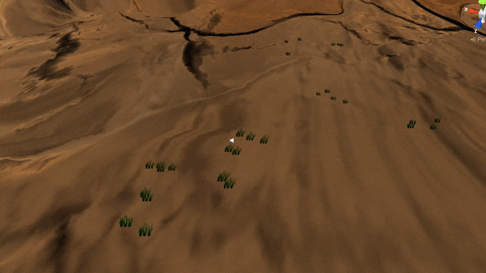
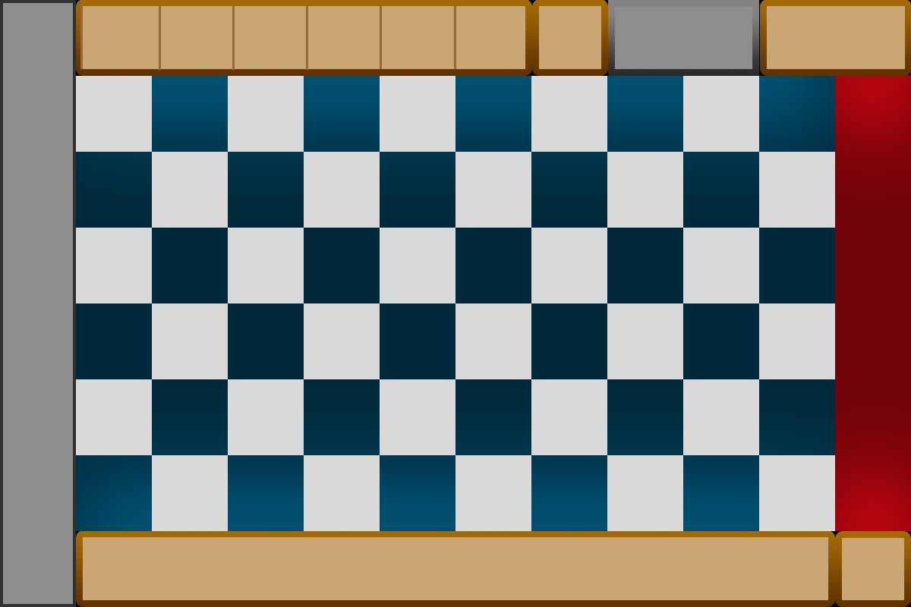
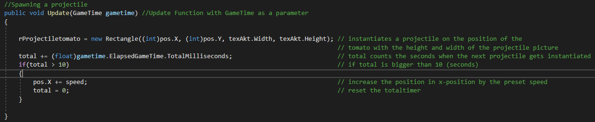
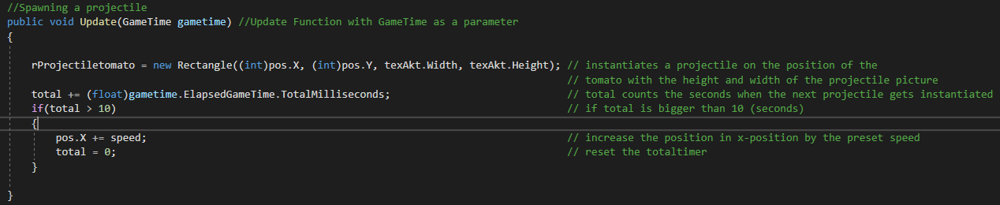
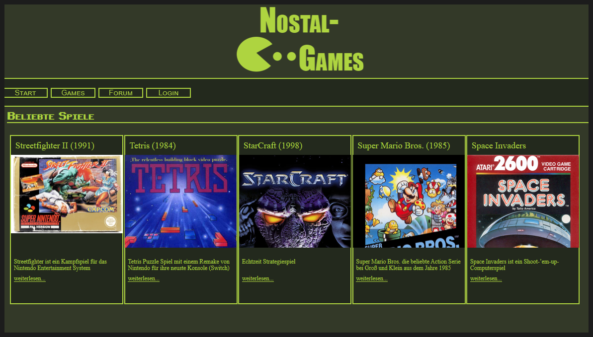
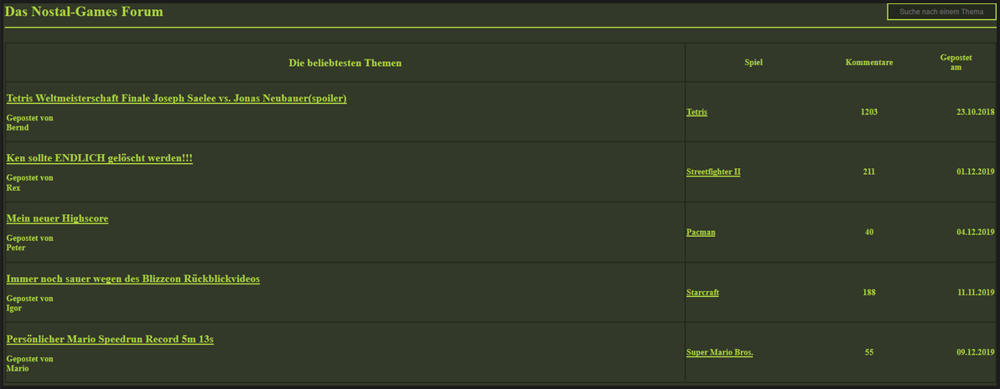

Gabriel Maljas

Game- und Webentwickler
Ich bin ein Programmierer in Ausbildung aus Heidelberg
Spiele
- Ocean's Silence
- Masks
- Ingredient Wars
Webseiten
- Nostal Games
- Portfolio
Masks
Beschreibung
Masks ist ein Action-/ Abenteuerspiel, welches für ein zwei wöchiges Schulprojekt entwickelt wurde.
Das Spiel handelt von einer Piratin, welche auf geheimen Inseln nach Schätzen sucht
. Doch auf dieser Insel entdeckt sie Geister, die ihr neue Fähigkeiten geben.
Projektaufgabe
In diesem Projekt war der Auftrag aus den Worten "Insel", "Geist" und "Schatz" mit der Game-Engine Unity und C# ein Spiel zu erstellen.
Inspiration für dieses Spiel habe ich dann zum Teil aus dem Film "Chihiros Reise ins Zauberland" genommen.
Die Geister in Masks sind dem Ungesicht aus diesem Film nachempfunden. Das Ungesicht
und die Geister haben beide nicht wirklich einen Körper und haben auch Masken als Gesicht. Da ich auch das Thema "Elemente" aufnehmen wollte, habe ich mich von der Nickelodeon Serie "Avatar
der Herr der Elemente" inspirieren lassen, um Fähigkeiten für mein Spiel zu finden. Zum Beispiel das Reiten auf der Wolke ist aus dieser Serie nachempfunden.


Game-Trailer
Gestaltung
Die Geister
Mit dem 3D-Modellierungstool Blender
habe ich Elementar-Geister modelliert und in mein Projekt eingebaut.
Im linken Bild ist der Wasser-Geist zu sehen, welcher sich im Wasser befindet. Im rechten Bild ist der Feuer-Geist zu sehen, welcher am ganzen Körper brennt.


Die Fähigkeiten
Der Hauptcharakter bekommt durch das Besiegen der Geister neue Fähigkeiten, die je nach dem besiegten Gegner anders sind.
Mauer aus der Erde

Wolke zum schweben

Code Ausschnitte
Positionierung der Kamera mit zwei Ankerpunkten
Ocean's Silence
Beschreibung
Ocean's Silence ist mein erstes Projekt mit der Game-Engine Unity . Das Projekt wurde mit C# geschrieben und die Objekte im Spiel sind aus dem Unity-Asset Store entnommen.
Projektaufgabe
In dieser Projektaufgabe musste ein Horrorspiel aus der Ego-Perspektive aufgebaut und mit C# programmiert werden. Die Aufgabe war relativ offen und es war einem selbst überlassen, was für eine Art Horrorspiel erstellt wird. Das einzige zu Beachten war, dass ein Labyrinth und eine Ruine im Spiel vorhanden sein soll.
Game-Trailer
Gestaltung
In diesem Projekt habe ich mich für eine Wasserumgebung entschieden. Durch ein konstantes Geräusch von Wasser sollte ein bedrückendes Gefühl herrschen. Dies sollte gleichzeitig ruhig sein, aber auch schon zu ruhig. Denn wenn etwas in der Umgebung passiert, wird der Spieler direkt darauf aufmerksam.
Die versteckte Ruine
Die Ruine ist im Spiel anfangs im Sand vergraben und wird nach lösen von Rätseln auftauchen. Diese soll einen zerstörten Tempel darstellen, welcher weitere geheime Hinweise für den Hauptcharakter gibt.

Die Treppe
Da ich zu der Zeit noch nicht sehr viel programmieren konnte, habe ich mich vorallem mit Animationen und Soundeffekten beschäftigt. Hier habe ich eine Treppe modelliert, welche sich zeigen lässt, sobald etwas gefunden wird.
Das Layrinth
Das Labyrinth ist ebenfalls am Anfang des Spiels auch nicht zu sehen, diese taucht erst auf wenn der Spieler auf der Spitze der Treppe ist. In diesem Labyrinth befindet sich der Schatz und ein Monster das auf einen am Ende wartet

Ingredient Wars
Beschreibung
Ingredient Wars war mein erstes Projekt mit der Open Source Implementation vom Microsoft XNA 4 Framework MonoGame und wurde mit C# geschrieben.
Projektaufgabe
Die Aufgabe des Projektes war das Erstellen eines Spiels mit dem
Framework MonoGame
und eines durch Zufall ausgewählten Themas. In diesem Projekt hatte ich das Thema "Geheime Formel" bekommen.
Da ich ein großer Fan des Spiels "Plants vs. Zombies" von dem Publisher EA bin,
habe ich mich entschieden ein Spiel mit ähnlicher Spielemechanik zu erstellen.
Um das Thema des Projektes zu erfüllen habe ich ein Konzept entwickelt mit der Idee, dass Nahrungsmittel sich gegen
Köche wehren und diese von den geheimen Rezeptformeln fern halten wollen.
Game-Trailer
Gestaltung
Die Figuren
Die Figuren sollten eine einfache und lustige Gestalt haben. Zum Beispiel habe ich mich für eine Kokosnuss entschieden die mehr Schaden nehmen kann, da diese auch eine harte Hülle besitzt.
Weiterhin habe ich eine Banane als rutschiges Hindernis ausgesucht, welches die Feinde zu Fall bringt.
Die Tomate ist die Haupteinheit meines Spieles, weil diese konstant Geschosse schießen
um den Gegnern Schaden zuzufügen.


Das Spielfeld
Das Design des Spielfelds habe ich an einer Küche angelehnt. Der Fußboden soll die Fliesen in einer Küche darstellen.
Der obere und untere Teil der Fliesen soll durch den Übergang von dunklen zu hellen Farben einen Glanz-Effekt erzeugen.
Die Fläche im oberen und unteren Teil des Spielfelds soll die Arbeitsflächen der Küche darstellen, von wo aus auch die Nahrungsmittel aufgenommen werden und auf den Boden gesetzt werden.

Code Ausschnitte
Instantiieren eines Projektils
Zielfindung eines Gegners und instatiieren eines Projektils
Code Ausschnitte
Instantiieren eines Projektils
Zielfindung eines Gegners und instatiieren eines Projektils
Nostal Games
Beschreibung
Nostal Games ist eine Webseite, welche Infos über Retro-Games gibt und auch das Spiel kurz anspielen lässt. Dies war auch das erste Webprojekt, was als 2er Gruppenprojekt nur mit HTML und CSS gebaut wurde.
Projektaufgabe
Die Projektaufgabe war eine Webseite mit HTML und CSS zu bauen, welche eine Art Bibliothek für Retro-Games bereitstellen soll.
Diese Seite sollte Informationen über diese Spiele enthalten und musste eine Art Forum enthalten.
Dazu sollte man Kategorien einfügen, welche die Spiele je nach Genre leichter finden lässt.
Gestaltung
Mein Gruppenpartner und ich haben uns entschieden die Webseite dem Stil von alten DOS nachzuempfinden um ein Retro-Aussehen zu erzeugen. Gepaart mit den alten Spielen und dem Retro-Look kann
klar gesagt werden, auf was die Webseite spezialisiert ist.
Frontpage
Auf der Frontpage ist oben das Logo und der Name der Webseite angezeigt. Darunter sind die potenziell beliebtesten Spiele zu sehen, welche dann von der Webseite
beworben werden für einen schnellen und einfachen Zugang.


Forum
Das Forum war eine Art Beispiel wie es aussehen könnte. Es ist möglich auf die Beiträgtitel zu klicken und die Beispiel Beiträge zu lesen.


Portfolio
JavaScript Beispiele aus dieser Webseite
Navigationsleistencode in der mobilen Version
Durch diesen JavaScript-Code kann man navLinks dynamisch einfügen ohne etwas am Code ändern zu müssen. Diese fliegen von Rechts in der Reihenfolge vom Index-Wert des jeweiligen NavLinks.

"Slide" hin und zurück in der mobilen Version
Wenn ein Projekt in der mobilen Version ausgewät wurde, ist es möglich durch wischen zurück zur Projektauswahl zu gelangen.
Hier habe ich gemessen wann ein Wischen vom Benutzer durchgeführt wurde.
Wenn ein Wischen durchgeführt wurde soll das Fenster mit dem Projekt zurück gleiten und deaktiviert werden.

Wenn ein Projekt in der mobilen Version ausgewät wurde, ist es möglich durch wischen zurück zur Projektauswahl zu gelangen.
Hier habe ich gemessen wann ein Wischen vom Benutzer durchgeführt wurde.
Wenn ein Wischen durchgeführt wurde soll das Fenster mit dem Projekt zurück gleiten und deaktiviert werden.